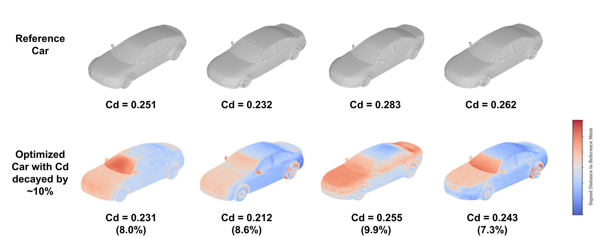

Ghadi Nehme
I build AI that designs like an engineer.
I'm a PhD student in Mechanical Engineering at MIT, advised by Prof. Faez Ahmed in the DeCoDe Lab, and a Jamieson Presidential and GE Vernova Fellow. My research spans large-scale synthetic CAD datasets; recovering editable CAD from meshes, images, and videos; data-efficient methods that generate, optimize, and simulate 3D designs from only a few examples; and AI agents that operate CAD software and close the design–build–test loop for physical products. This work appears at NeurIPS, ICML, and ASME IDETC.
More about me
I am a PhD student in Mechanical Engineering at MIT, advised by Prof. Faez Ahmed in the DeCoDe Lab, and a Jamieson Presidential Fellow and GE Vernova Fellow. I work on AI for engineering design. I build datasets, models, and optimization methods for turning meshes, images, sketches, and videos into precise, editable CAD programs; generating parameter-controlled 3D designs, optimizing their shape for performance such as aerodynamic drag, and predicting their physical behavior from only a few examples; and training agents that learn to use professional design software. My current work is on autonomous design–build–test–refine loops for physical product design, with a robot in the loop.
I have published at NeurIPS, ICML, and ASME IDETC. At IDETC 2026, our paper FLARE won the Overall Best Paper Award. MIT News covered VideoCAD, and MIT Mechanical Engineering featured CADFit. In summer 2026, I interned at Meta as a PhD Research Scientist, building multi-agent systems and an AI-native VR environment for mechanical design.
Before MIT, I earned an MS in Mechanical Engineering at Stanford, where I worked on surgical robots, reinforcement learning, and neural decoding, and a BS in Mathematics and Physics at École Polytechnique, where I graduated as class valedictorian. I have also interned at Google and CNRS.
How my methods work
Interactive walkthroughs built from real examples and data from the papers.

VideoCADFormer sees only a target image and the live UI, and operates Onshape action by action to build the CAD model.
Starting from a partially built model, VideoCADFormer completes the design to match the target image.
Recent updates
- PressCADFit featured by MIT Mechanical Engineering: “AI-guided optimization tool makes product design faster and more accessible.”
- AwardFLARE won the Overall Best Paper Award and the AI/ML Technical Committee Best Paper Award at ASME IDETC-CIE 2026.
- AwardReceived the GE Vernova Graduate Fellowship.
- Paper
- CareerJoined Meta as a PhD Research Scientist Intern in AI for Product Design, building multi-agent systems that automate mechanical CAD workflows and an AI-native VR design app.
- AwardReceived the MIT Thomas Sheridan Award for creativity in human–machine integration.
- PressVideoCAD featured in MIT News: “New AI agent learns to use CAD to create 3D objects from sketches.”
- PaperVideoCAD accepted at NeurIPS 2025 (Datasets & Benchmarks Track).
- TeachingTeaching Assistant for MIT 2.155: AI and ML for Engineering Design.
- CareerStarted my PhD at MIT as a Jamieson Presidential Fellow.
- CareerGraduated from Stanford with an MS in Mechanical Engineering (GPA 4.0).
- TeachingTeaching Assistant for Stanford MATH 104: Applied Matrix Theory (2023–24), running office hours and review sessions for 100+ students.
- CareerJoined Google as a Hardware Engineering Intern in Mountain View.
- CareerGraduated from École Polytechnique as class valedictorian, summa cum laude.
Paper videos
Short overviews of CADFit, VideoCAD, and LAMP.
Let's talk
I'm always happy to talk about AI-assisted design, generative modeling for engineering, and intelligent interfaces, whether for research collaborations, internships, or speaking.
ghadi@mit.eduMIT Department of Mechanical Engineering · Cambridge, MA